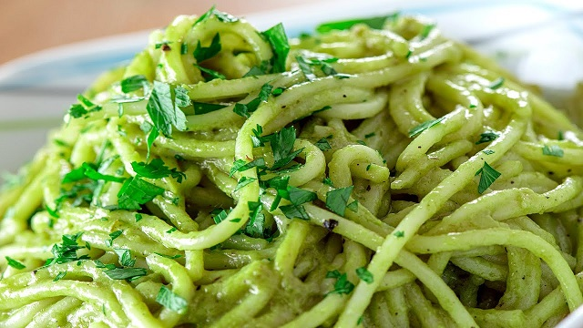

RECETA PARA COCINAR ESPAGUETI VERDE
Podras encontrar los ingredientes y el procedimiento de como
realizar la elaboracion de los espaguetis verdes para 4 porciones
Ingredientes (4 porciones):
400 g de espagueti
3 chiles poblanos grandes
1/2 taza de crema ácida (o crema para cocinar)
1/2 taza de leche
1/4 de taza de queso crema (opcional, para mayor cremosidad)
1 diente de ajo
1/4 de cebolla
Sal y pimienta al gusto
Aceite o mantequilla
Queso parmesano o queso manchego rallado (para gratinar, opcional)
Preparación:
1. Cocinar el espagueti:
Hierve abundante agua con sal y cocina el espagueti según las instrucciones del paquete hasta que esté al dente.
Escurre y reserva.
2. Preparar los chiles poblanos:
Asa los chiles poblanos directamente sobre la flama de la estufa o en un comal hasta que la piel se queme y se vea negra.
Colócalos en una bolsa de plástico o un recipiente tapado durante 10 minutos para que suden.
Pela la piel quemada, retira las semillas y las venas.
3. Preparar la salsa verde:
Licúa los chiles pelados junto con la crema, la leche, el queso crema (si lo usas), el ajo y la cebolla hasta obtener una salsa suave.
Agrega sal y pimienta al gusto.
4. Cocinar la salsa:
Calienta un poco de aceite o mantequilla en una sartén grande a fuego medio.
Vierte la salsa y cocina durante 5-7 minutos, moviendo constantemente hasta que espese ligeramente.
5. Mezclar y servir:
Incorpora el espagueti cocido a la salsa y mezcla bien para que se impregne del sabor.
Sirve caliente y, si lo deseas, espolvorea queso rallado por encima.
